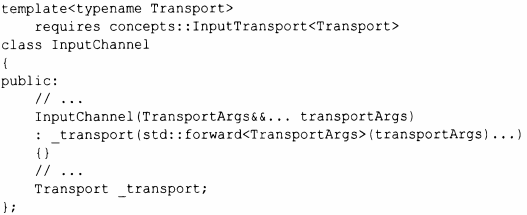

⇐7.4.1 Выражения свертки 7.5 Модель компиляции шаблонов⇒
Передача аргументов через интерфейс неизменными - важное использование вариативных шаблонов. Рассмотрим понятие сетевого входного канала, для которого фактический метод перемещения значений является параметром. Различные транспортные механизмы имеют разные наборы параметров конструктора:
Функция стандартной библиотеки forward () (§13.2.2) используется для передачи аргументов неизменными из конструктора InputChannel в конструктор Transport.
Дело в том, что автор InputChannel может создать объект типа Transport без необходимости знать, какие аргументы необходимы для построения конкретного транспорта. Разработчику InputChannel нужно знать только общий пользовательский интерфейс для всех объектов Transport.
Передача очень распространена в фундаментальных библиотеках, где необходимы общность и низкие накладные расходы времени выполнения, и распространены очень общие интерфейсы.